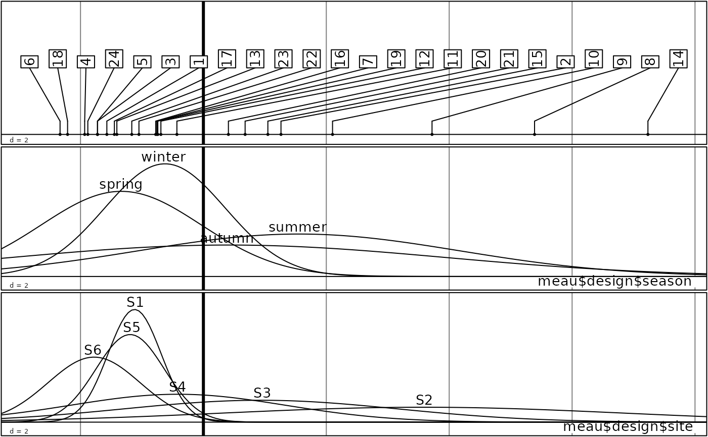

Relationships between one score and qualitative variables
sco.gauss.RdDraws Gauss curves with the same mean and variance as the scores of indivivuals belonging to categories of several qualitative variables.
Arguments
- score
a numeric vector
- df
a dataframe containing only factors, number of rows equal to the length of the score vector
- xlim
starting point and end point for drawing the Gauss curves
- steps
number of segments for drawing the Gauss curves
- ymax
max ordinate for all Gauss curves. If NULL, ymax is computed and different for each factor
- sub
vector of strings of characters for the lables of qualitative variables
- csub
character size for the legend
- possub
a string of characters indicating the sub-title position ("topleft", "topright", "bottomleft", "bottomright")
- legen
if TRUE, the first graphic of the series displays the score with evenly spaced labels (see
sco.label)- label
labels for the score
- clabel
a character size for the labels, used with
par("cex")*clabel- grid
a logical value indicating whether a grid in the background of the plot should be drawn
- cgrid
a character size, parameter used with par("cex")*
cgridto indicate the mesh of the grid- include.origin
a logical value indicating whether the point "origin" should belong to the plot
- origin
the fixed point in the graph space, for example c(0,0) the origin axes
Details
Takes one vector containing quantitative values (score) and one dataframe containing only factors that give categories to wich the quantitative values belong. Computes the mean and variance of the values in each category of each factor, and draws a Gauss curve with the same mean and variance for each category of each factor. Can optionaly set the start and end point of the curves and the number of segments. The max ordinate (ymax) can also be set arbitrarily to set a common max for all factors (else the max is different for each factor).
Author
Jean Thioulouse, Stéphane Dray stephane.dray@univ-lyon1.fr
Examples
data(meau)
envpca <- dudi.pca(meau$env, scannf=FALSE)
dffac <- cbind.data.frame(meau$design$season, meau$design$site)
sco.gauss(envpca$li[,1], dffac, clabel = 2, csub = 2)
